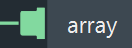
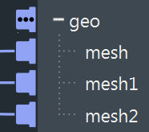

使用数组
数组是已创建索引的值列表。例如，网格的 point_position 特性的 data 是 float3 值的数组，它根据顶点数量创建索引。
您可以通过指定索引来获取或设置数组中的单一值。Bifrost 中的数组使用从零开始的索引**。这意味着在大小为 5 的数组中，第一个值的索引是 0 而不是 1，最后一个值的索引是 4。
尽管负数不能表示有效的数组索引，但索引类型为有符号整数 (long)。
数组端口
当端口的类型为数组时，它的形状在接触节点的地方更宽，类似于其侧面的顶帽。

某些数组端口允许串联输入连接。这意味您可以连接单个元素或数组的多个连接。所有连接的输入将自动连接为单个输入数组，这类似于使用 build_array 节点。
- 将连接拖到主端口图标上以添加新的输入。
- 展开端口以查看单个连接。例如，这可以让您断开特定输入。

要在您自己的图表和复合创建串联输入端口，请参见为数组创建串联输入端口
用于使用数组的节点
在 Core::Array 名称空间中有许多用于使用数组的节点。此外，for-each 和 iterate 复合可用于遍历数组的值。
自动循环
大多数情况下，您不需要遍历数组来处理其值。这是因为大多数节点会在需要时自动循环处理数组的元素。
例如：
- 如果将两个单一值作为输入连接到
add节点，则会获得单一值作为输出。在这种情况下不需要自动循环。 - 如果将一个单一值和一个数组连接到
add节点 则会自动将该单一值添加到数组中的每个值。输出则是包含总和的另一个数组。 - 如果将两个数组连接到
add节点，则会将相应的数组值相加，而输出仍是一个数组。如果数组具有不同的大小，则输出数组将截断为较小输入的大小。
发生自动循环时，它在受影响的端口上以特殊图标表示：